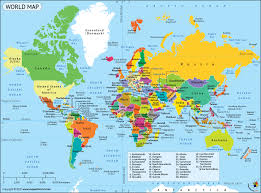

Các thẻ thường dùng: <img>, <map>, <area>.
Dùng để hiển thị hình ảnh.
Ví dụ hiển thị ảnh từ thư mục cục bộ:

Ví dụ hiển thị ảnh từ Internet:

Lưu ý:
- src: đường dẫn hình ảnh
- alt: mô tả khi ảnh không hiển thị
- width, height: chỉnh kích thước
Dùng để tạo bản đồ ảnh (image map) — mỗi vùng của ảnh liên kết đến một URL khác nhau.
Ví dụ: Ảnh có thể click từng vùng khác nhau:
Giải thích:
usemap="#tênmap": liên kết ảnh với bản đồ ảnh<area> có các thuộc tính: